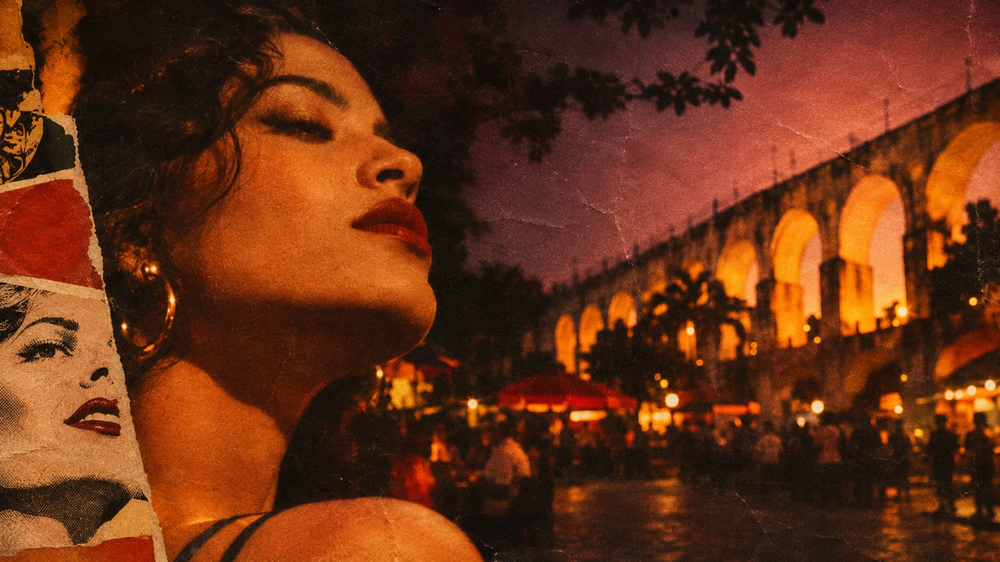
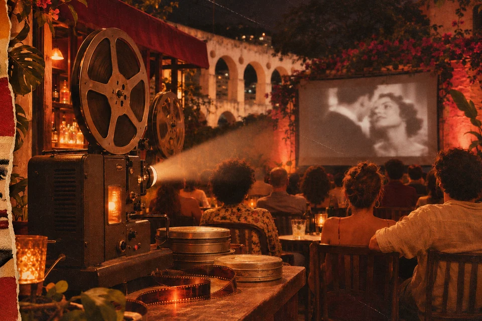
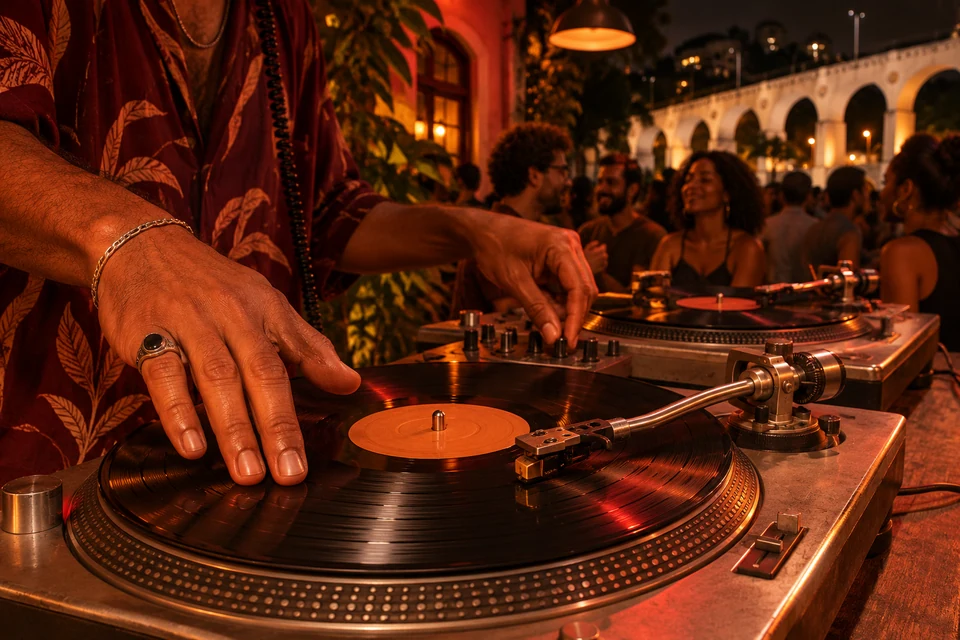
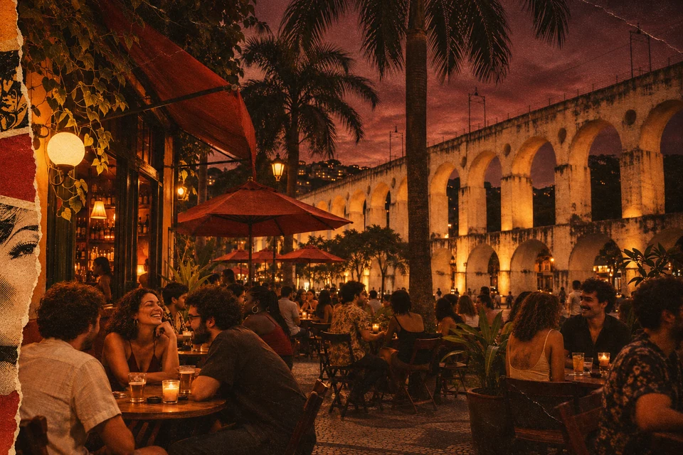

Roda de Samba
Roda aberta com músicos convidados, clássicos do samba e aquele clima boêmio da Lapa.
Couvert: R$ 20,00Reservar mesa
Sessão ao ar livre
+ trilha em vinil
Clássicos do cinema na varanda do Olivo, com projeção ao ar livre, som em vinil e drinks especiais da casa.
Reservar ingressos
Roda aberta com músicos convidados, clássicos do samba e aquele clima boêmio da Lapa.
Couvert: R$ 20,00Reservar mesa
Jazz na varanda, com quarteto ao vivo e uma seleção especial de vermutes da casa.
Couvert: R$ 30,00Reservar mesa
Pista na varanda com DJ convidado, misturando brasilidades, grooves e clássicos da noite.
Entrada: R$ 25,00Consultar ingressoAgenda ilustrativa dos mockups · janeiro e fevereiro, sem ano definido.

Sessão ao ar livre + trilha em vinil
Ingressos: R$ 30,00
Clássicos do cinema na varanda do Olivo, com projeção ao ar livre e trilha em vinil.
ConsultarSamba de raiz na Lapa
Couvert: R$ 20,00
Roda aberta com músicos convidados, clássicos do samba e aquele clima boêmio da Lapa.
ConsultarBossa, jazz e canções brasileiras
Couvert: R$ 25,00
Uma noite dedicada à bossa nova, com repertório autoral e releituras de clássicos.
ConsultarQuarteto ao vivo e carta especial
Couvert: R$ 30,00
Jazz na varanda, com quarteto ao vivo e uma seleção especial de vermutes da casa.
ConsultarDiscos, brasilidades e clássicos
Entrada: R$ 25,00
Pista na varanda com DJ convidado, misturando brasilidades, grooves e clássicos da noite.
ConsultarEscolha outra data ou categoria.

Entre os arcos, a música, os encontros e os bons drinks, o Olivo celebra o que o Rio tem de mais vivo: sua noite, sua gente, sua cultura.
Conheça o bar